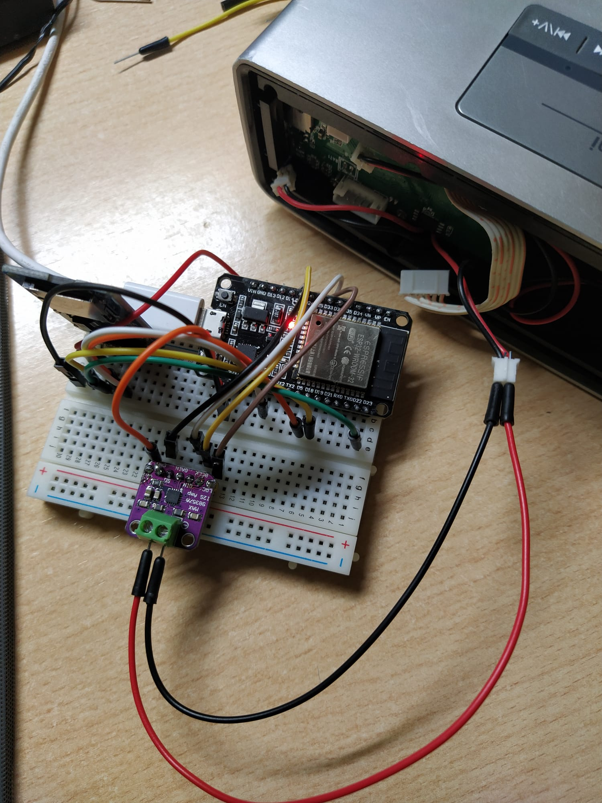

En esta practica usaremos el bus I2S usado especificamente para el audio.
Para este primer ejercicio usamos un programa ya creado para reproducir una muestra de audio.
Este ejemplo se puede encontrar en esta librería de audio: https://github.com/earlephilhower/ESP8266Audio
El codigo es el siguiente:
#include <Arduino.h>
#include "FS.h"
#include "HTTPClient.h"
#include "SPIFFS.h"
#include "SD.h"
#include "AudioGeneratorAAC.h"
#include "AudioOutputI2S.h"
#include "AudioFileSourcePROGMEM.h"
#include "sampleaac.h"
AudioFileSourcePROGMEM *in;
AudioGeneratorAAC *aac;
AudioOutputI2S *out;
void setup(){
Serial.begin(9600);
in = new AudioFileSourcePROGMEM(sampleaac, sizeof(sampleaac));
aac = new AudioGeneratorAAC();
out = new AudioOutputI2S();
out -> SetGain(0.125);
out -> SetPinout(26,25,22);
aac->begin(in, out);
}
void loop(){
if (aac->isRunning()) {
aac->loop();
} else {
// aac -> stop();
Serial.printf("Sound Generator\n");
delay(1000);
in = new AudioFileSourcePROGMEM(sampleaac, sizeof(sampleaac));
aac->begin(in,out);
}
}
En la cabezera debemos de incluir las diferentes cabezeras y librerías.
#include <Arduino.h>
#include "FS.h"
#include "HTTPClient.h"
#include "SPIFFS.h"
#include "SD.h"
#include "AudioGeneratorAAC.h"
#include "AudioOutputI2S.h"
#include "AudioFileSourcePROGMEM.h"
#include "sampleaac.h"
Declaramos los parametros de entrada, salida i la fuente de audio.
AudioFileSourcePROGMEM *in;
AudioGeneratorAAC *aac;
AudioOutputI2S *out;
Tras inicializar la comunicación serie, configuramos la entrada deseada, la muestra del audio y la salida con las funciones de la librería ESP8266AUDIO.
Para que se reproduzca, configuramos una ganancia y los pines de salida que conectan el bus I2S. Finalmente hacemos que se reproduzca una vez con el aac->begin(in,out).
void setup(){
Serial.begin(9600);
in = new AudioFileSourcePROGMEM(sampleaac, sizeof(sampleaac));
aac = new AudioGeneratorAAC();
out = new AudioOutputI2S();
out -> SetGain(0.125);
out -> SetPinout(26,25,22);
aac->begin(in, out);
}
Esa parte ha sido modificada ligeramente para que el programa reproduzca la muestra en bucle.
Tras ver si la muestra ha terminado de ser reproducida, en vez de parar el aac declaramos de nuevo la entrada de audio in y la enchegamos de nuevo. De esta forma cuando se acabe de reproducir volverá a sonar.
void loop(){
if (aac->isRunning()) {
aac->loop();
} else {
// aac -> stop();
Serial.printf("Sound Generator\n");
delay(1000);
in = new AudioFileSourcePROGMEM(sampleaac, sizeof(sampleaac));
aac->begin(in,out);
}
}
Cada vez que se reproduzca la muestra se mostrará:
Sound Generator
En este ejercicio en vez de reproducir una muestra cualquiera, reproduciremos una canción o muestra que nosotros deaseamos, utilizando el lector de tarjetas SD (bus SPI) empleada en la practica anterior.
El montaje sería el siguiente:

Teniendo en cuenta el montage, casi podriamos decir que es mas simple el codigo:
#include <Arduino.h>
#include "Audio.h"
#include "SD.h"
#include "FS.h"
#include "HTTPClient.h"
// Digital I/O used
#define SD_CS 4
#define SPI_MOSI 23
#define SPI_MISO 19
#define SPI_SCK 18
#define I2S_DOUT 25
#define I2S_BCLK 27
#define I2S_LRC 26
extern Audio audio;
void setup(){
Serial.begin(9600);
pinMode(SD_CS, OUTPUT);
digitalWrite(SD_CS, HIGH);
SPI.begin(SPI_SCK, SPI_MISO, SPI_MOSI);
SD.begin(SD_CS);
audio.setPinout(I2S_BCLK, I2S_LRC, I2S_DOUT);
audio.setVolume(10); // 0...21
audio.connecttoFS(SD, "Ensoniq-ZR-76-01-Dope-77.wav");
}
void loop(){
audio.loop();
}